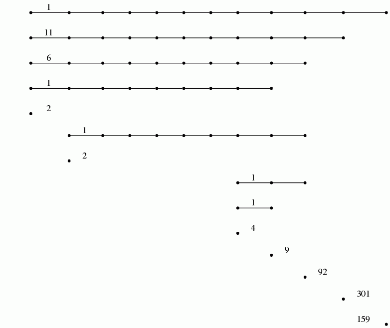
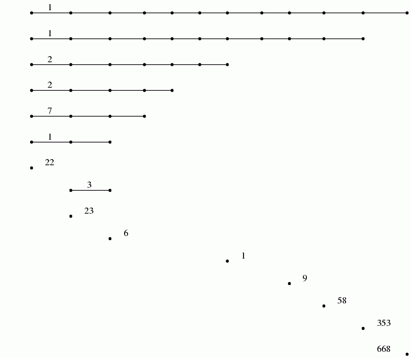

Pairwise distances between 74 points from some metric space have been recorded and stored in a 74× 74 matrix D. The following commands load the matrix, construct a filtration of length 100 on the first two dimensions of the assotiated clique complex (also known as the Rips Complex), and display the resulting degree 0 persistent homology as a barcode. A single bar with label n denotes n bars with common starting point and common end point.
gap> file:=HapFile("data253a.txt");; gap> Read(file); gap> G:=SymmetricMatrixToFilteredGraph(D,100); Filtered graph on 74 vertices. gap> K:=FilteredRegularCWComplex(CliqueComplex(G,2)); Filtered regular CW-complex of dimension 2 gap> P:=PersistentBettiNumbers(K,0);; gap> BarCodeCompactDisplay(P);
The next commands display the resulting degree 1 persistent homology as a barcode.
gap> P:=PersistentBettiNumbers(K,1);; gap> BarCodeCompactDisplay(P);

The following command displays the 1 skeleton of the simplicial complex arizing as the 65-th term in the filtration on the clique complex.
gap> Y:=FiltrationTerm(K,65); Regular CW-complex of dimension 1 gap> Display(HomotopyGraph(Y));

These computations suuggest that the dataset contains two persistent path components (or clusters), and that each path component is in some sense periodic. The final command displays one possible representation of the data as points on two circles.
Each point in the dataset was an image consisting of 732× 761 pixels. This point was regarded as a vector in R^732× 761 and the matrix D was constructed using the Euclidean metric. The images were the following:

The following example reads in a set S of vectors of rational numbers. It uses the Euclidean distance d(u,v) between vectors. It fixes some vector $u_0\in S$ and uses the associated function f: D→ [0,b] ⊂ R, v↦ d(u_0,v). In addition, it uses an open cover of the interval [0,b] consisting of 100 uniformly distributed overlapping open subintervals of radius r=29. It also uses a simple clustering algorithm implemented in the function cluster.
These ingredients are input into the Mapper clustering procedure to produce a simplicial complex M which is intended to be a representation of the data. The complex M is 1-dimensional and the final command uses GraphViz software to visualize the graph. The nodes of this simplicial complex are "buckets" containing data points. A data point may reside in several buckets. The number of points in the bucket determines the size of the node. Two nodes are connected by an edge when their end-point nodes contain common data points.
gap> file:=HapFile("data134.txt");; gap> Read(file); gap> dx:=EuclideanApproximatedMetric;; gap> dz:=EuclideanApproximatedMetric;; gap> L:=List(S,x->Maximum(List(S,y->dx(x,y))));; gap> n:=Position(L,Minimum(L));; gap> f:=function(x); return [dx(S[n],x)]; end;; gap> P:=30*[0..100];; P:=List(P, i->[i]);; gap> r:=29;; gap> epsilon:=75;; gap> cluster:=function(S) > local Y, P, C; > if Length(S)=0 then return S; fi; > Y:=VectorsToOneSkeleton(S,epsilon,dx); > P:=PiZero(Y); > C:=Classify([1..Length(S)],P[2]); > return List(C,x->S{x}); > end;; gap> M:=Mapper(S,dx,f,dz,P,r,cluster); Simplicial complex of dimension 1. gap> Display(GraphOfSimplicialComplex(M));

The datacloud S consists of the 400 points in the plane shown in the following picture.

The following example reads in a digital image as a filtered pure cubical complexex. The filtration is obtained by thresholding at a sequence of uniformly spaced values on the greyscale range. The persistent homology of this filtered complex is calculated in degrees 0 and 1 and displayed as two barcodes.
gap> file:=HapFile("image1.3.2.png");; gap> F:=ReadImageAsFilteredPureCubicalComplex(file,20); Filtered pure cubical complex of dimension 2. gap> P:=PersistentBettiNumbers(F,0);; gap> BarCodeCompactDisplay(P);

gap> P:=PersistentBettiNumbers(F,1);; gap> BarCodeCompactDisplay(P);

The 20 persistent bars in the degree 0 barcode suggest that the image has 20 objects. The degree 1 barcode suggests that 14 (or possibly 17) of these objects have holes in them.
The following image was used in the example.

generated by GAPDoc2HTML